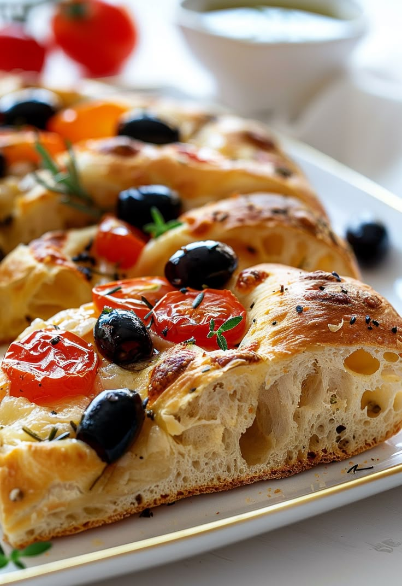

Description
Focaccia, that flat, dimpled Italian bread generously flavored with olive oil, is found all over Italy and varies from place to place. I was torn about which type of focaccia to share, but ultimately settled on this particularly well-known focaccia barese, from southern Italy.
Ingredients
- 5g sugar
- 500g wheat flour
- 9g baking powder
- 50 cm3 olive oil
- 325 cm3 water
- 10g shall
- coarse salt
- tomate cherry
- garlic
- fresh rosemary
- black olives
Steps
- On the work table, make a fountain with the flour and salt on the edges.
- Add yeast and sugar in the center and hydrate it with a little water.
- Form a dough by adding water whenever necessary.
- Once there are no traces of flour , add the olive oil and continue kneading until the dough absorbs it completely.
- Add a little more water if necessary, you should achieve a fairly moist and homogeneous dough.
- Let it ferment in a bowl with olive oil and cover with plastic wrap.
- Wait until the dough has doubled in size and divide into 2 portions.
- Roll out each piece of dough and place it on a greased baking sheet, brushing it with olive oil.
- Allow a second fermentation.
- Pierce with your fingertips and top with the tomatoes, black olives, garlic with skin, rosemary , and more olive oil, then sprinkle with coarse salt.
- Let it rest for 20 minutes on the tray before baking.
- Bake at 220° C for 12 minutes until the crust is golden.
- Once baked, remove from the tray so that the base does not remain wet.